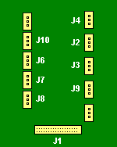

Remove power from the motors by using the switch on the Power Distribution PCB labeled "All DC power (except CPU and reagent coolers)".
Install the sample pick-and-place.
Caution: Do not remove the towers from the base plate (if at all possible). Removing the towers makes it much more difficult to adjust and align the sample pipettor module after it is installed.
Caution: If towers are being replaced when installing a sample pick-and-place, then the temperature PCB bracket needs to be transferred from the old tower to the replacement tower.
Install the gantry using one of two options: install new gantry only or install new gantry and new mounting towers.
If replacing a pick-and-place (new gantry only), remove the new gantry from the towers and install it on the mounting towers currently in place.
Manually move the pick-and-place carriage to the far right .
Align the gantry mounting holes with the tower locating pins.
Push the gantry onto the pins.
Tighten the two captive screws that hold the gantry to the towers.
If installing a pick-and-place with new mounting towers, mount each tower (with the gantry attached) to the instrument base plate using the four mounting screws.
Note: The location of the incubator pick-and-place towers may have been marked on the instrument base plate earlier.
Caution: If the tower locations were not marked on the base plate, adjustments and alignments are required.
Replace the connectors on the temperature sensor interface PCB.

J1 - Ribbon Cable
J2 - Incubator
J3 - Sample Wheel
J4 - Substrate Heater
J6 - Reagent Cooler 1
J7 - Reagent Cooler 2
J8 - Reagent Cooler 3
J9 - Reagent Air
J10 - Sample Cooler
Replace the PCB cover.
Replace the connectors on the sample pick-and-place interface PCB.
J1 - Ribbon Cable
J2 - Sample P&P Motor
Install the air line into the sample pick-and-place air valve.
Note: Push the tubing fully into the sample pick-and-place air valve fitting.
Install the incubator pick-and-place module before performing the verification protocol.